Diophantus of Alexandria: Hellenistic Greek (ca. 201–285)
In the study of elementary algebra when one saw an equation that looked like this: x + y = 7, the usual reaction was there needs to be a second equation with either x and/or y. Otherwise, the feeling was that a solution could not be found. However, there are, in fact, several solutions to this equation. If we limit our solutions to integral values, one possible solution would be x = 2 and y = 5, since 2 + 5 = 7. This type of thinking was first introduced by the Hellenistic Greek mathematician Diophantus, who lived in Alexandria, Egypt, during the middle of the third century of the Common Era and is purported to have lived about eighty-four years. Unfortunately, as with other luminaries from ancient times, very little is known about his life; what has made him well known today is that he is often referred to as the “father of algebra.” Although some fragments of his work have been found, his fame today is for a series of books titled Arithmetica, which presented algebra for the first time as we know it today, and was a forerunner to the study of number theory.
In Arithmetica, Diophantus begins by introducing some concepts of numbers and explains a new notation using a symbol for a variable, something that probably did not catch on for another thousand years, and that today we see as ordinary algebra. He introduced positive and negative numbers, and he was the first to consider fractions as actual numbers. He begins in his first book of Arithmetica with some simple problems and then progresses into those that have multiple solutions—albeit in integer form. He later continues to include problems that involve raising numbers to a higher power.
Figure 8.1. Diophantus of Alexandria. https://commons.wikimedia.org/wiki/Category:Diophantus
For example, a Diophantine equation—one that may have many solutions, yet all integral—could be the following:
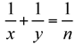
. There are three integer solutions to this equation when n = 4: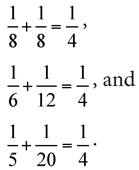
The fame of Diophantus’s work has certainly been far-reaching. In 1621, the French mathematician Claude Gaspard Bachet de Méziriac (1581–1638) wrote Les éléments arithmétiques, which was a translation from Greek to Latin of Diophantus’s Arithmetica (see fig. 8.2).
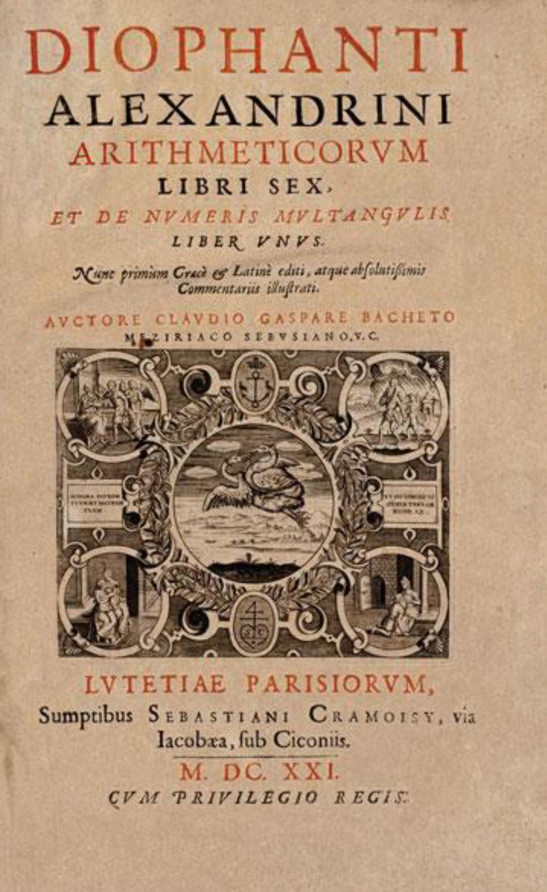
Figure 8.2. Title page of the 1621 edition of Diophantus’s Arithmetica, translated into Latin by Claude Gaspard Bachet de Méziriac.
A copy of this Bachet translation was owned by the French mathematician Pierre de Fermat (1607–1665). In the margin of a page in the 1621 edition of the book, Fermat wrote that he had a proof that the equation xn + yn = zn, where n ≥ 3, has no integer solutions—but he claimed not to have enough space in the margin to do the proof. Interestingly enough, this statement was included in a 1670 edition of Diophantus’s Arithmetica, as shown in the next-to-last paragraph in figure 8.3, under the heading OBSERVATIO DOMINI PETRI DE FERMAT. This became known as Fermat’s last theorem, and it perplexed mathematicians for 358 years, until the British mathematician Andrew Wiles produced a proof in 1995 (see chap. 15).
Diophantine equations do play a role in our everyday computations. Suppose we wish to determine in how many ways you can purchase six-cent stamps and eight-cent stamps for five dollars. Most people will promptly realize that there are two variables that can be represented as x and y. Letting x represent the number of eight-cent stamps and y represent the number of six-cent stamps, the equation 8x + 6y = 500 should follow. Then, by dividing both sides of the equation by 2, this would be converted to 4x + 3y = 250. At this juncture, we realize that, although this equation appears to have an infinite number of solutions, it may or may not have an infinite number of integral solutions. Moreover, from the context of the original problem, it may or may not have an infinite number of positive integral solutions (since a number of stamps must be a positive integer number).
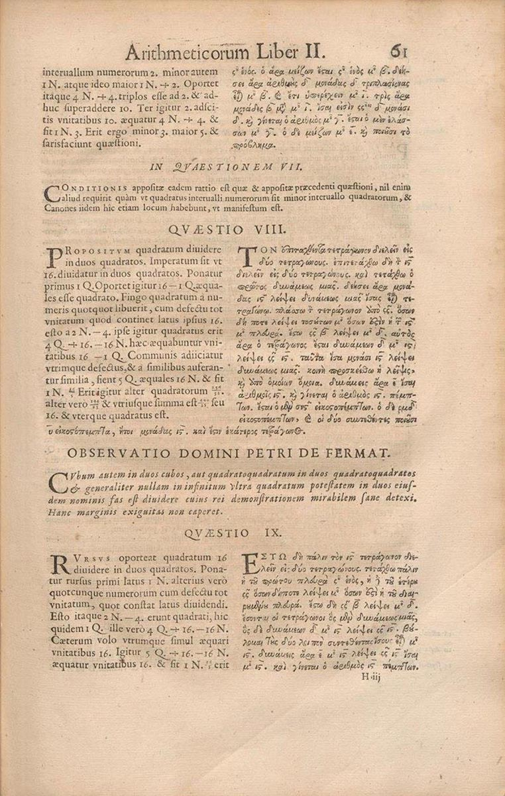
Figure 8.3. A page from the 1670 edition of Diophantus’s Arithmetica, which includes Fermat’s commentary, particularly his last theorem.
The first consideration is whether integral solutions, in fact, exist. Here we employ a useful theorem, that states that, if the greatest common factor of a and b is also a factor of k, where a, b, and k are integers, then there exist an infinite number of integral solutions (both positive and negative) for x and y in the equation ax + by = k. There we have a Diophantine equation, as we are looking for integer solutions.
Since the greatest common factor of 3 and 4 is 1, which is a factor of 250, there exist an infinite number of integral solutions for the equation 4x + 3y = 250. Reverting back to the original problem, we wish to know how many (if any) positive integral solutions exist. One possible method developed by Swiss mathematician Leonhard Euler (1707–1783) is often referred to as Euler’s method. Following this method, we begin by solving for the variable with the coefficient of least absolute value, which, in this case, is y. Therefore, we get
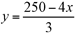
, which we then write in separate integral parts as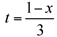
. We now introduce another variable, t, and let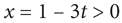
, which allows us to get x = 1 – 3t. Since there is no fractional coefficient in this equation, the process does not have to be repeated. Now, substituting x into the original equation, we get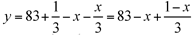
. For various integral values of t, corresponding values of x and y will be generated. From our original problem, we realize that the values of x and y need to be positive integers. Therefore,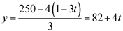
, or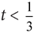
, and y = 82 + 4t > 0, which leads to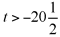
. Combining these gives us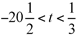
, which tells us that there are 21 possible combinations of six-cent stamps and eight-cent stamps that can be purchased for five dollars.This is a simple example of how a Diophantine equation can be solved using Euler’s method; of course, for this equation, we only considered integral solutions, and, more specifically, only positive integral solutions (because of the nature of problem involving the number of stamps purchased). There are many methods to solve Diophantine equations, some of which can take many steps to reach a solution. However, we are indebted to Diophantus of Alexandria for generating these equations and thereby forming the foundation of algebra.
One of the recreational problems in the form of number games in the late fifth century is sometimes considered to be Diophantus’s epitaph:
“Here lies Diophantus,” the wonder behold.
Through art algebraic, the stone tells how old:
“God gave him his boyhood one-sixth of his life;
One twelfth more as youth while whiskers grew rife;
And then yet one-seventh ’ere marriage begun.
In five years there came a bouncing new son;
Alas, the dear child of master and sage,
After attaining half the measure of his father’s life, chill fate took him.
After consoling his fate by the science of numbers for four years, he ended his life.”1
The puzzle implies that Diophantus lived to be about eighty-four years old, which is the only evidence we have of his actual age.
Despite the limited tools that Diophantus had at his disposal, he did solve many mathematical problems and with his work Arithmetica inspired mathematicians such as the Arabic mathematician al-Karaji (c.980–1030) and also set the stage for the French mathematician Pierre de Fermat (1601–1665), who might be considered the founder of modern number theory.